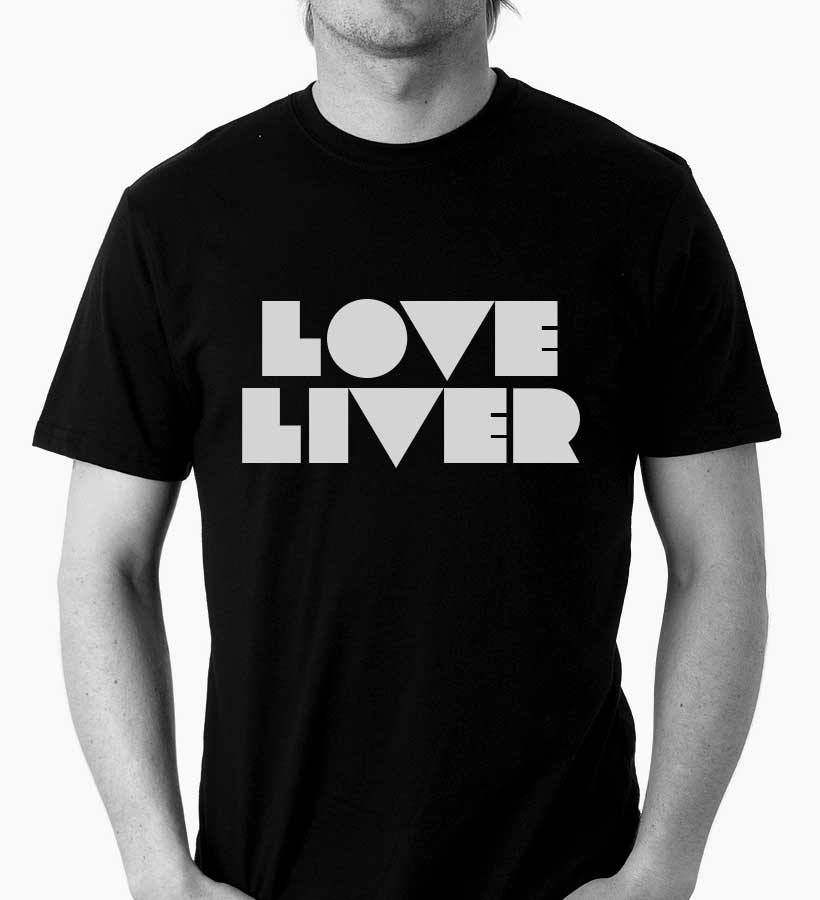
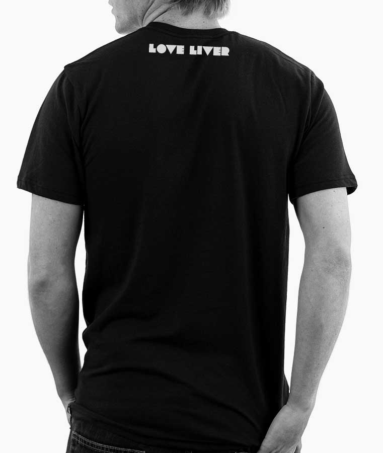
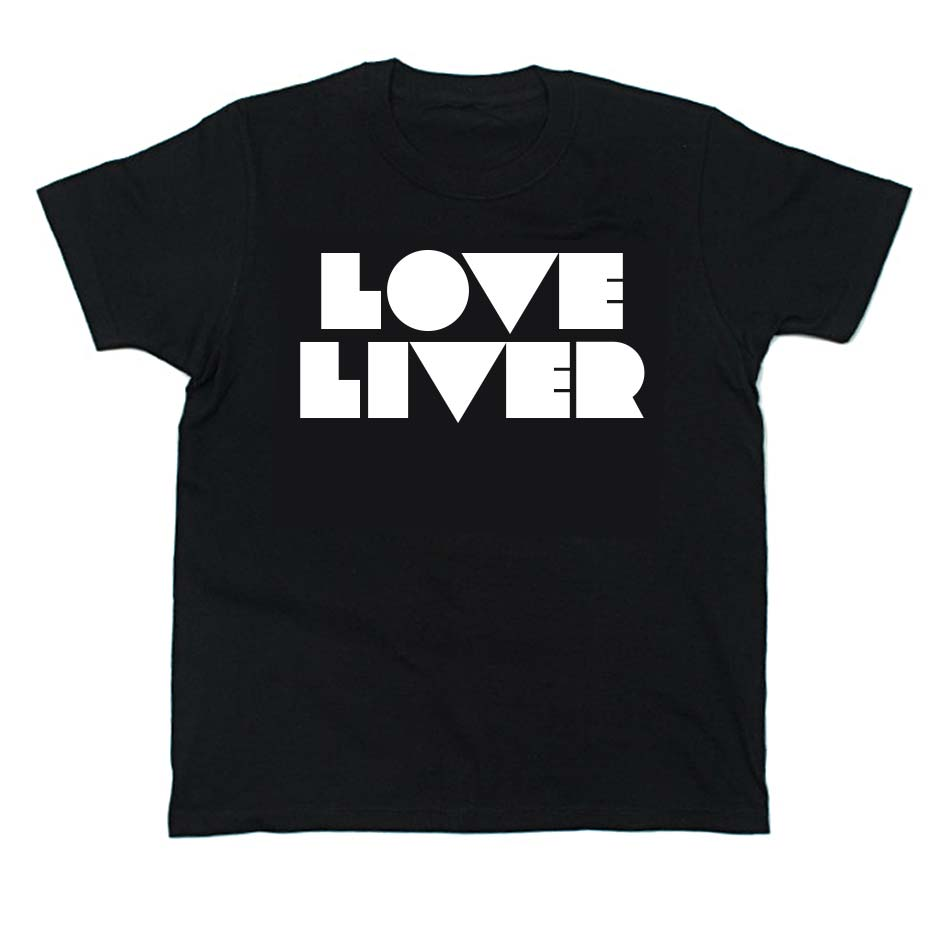

LoveLiver Tee




LoveLiver Tee
ラブライバーの皆さんこんにちは。ラブライブへの情熱をばっちりアピールできる T シャツを考えました。せっかくなので C85 で販売します。 冬に着るのはちょっと寒いかもしれませんが、来たる 4th ライブ用に、はたまた夏コミなどのイベント用に、どうぞご利用ください。
Spec
| Product | LoveLiver Tee |
|---|---|
| Price | ¥1,500 |
| Color | Black |
| Size | S/M/L |
コミックマーケット 85 3日目（火曜日）西め-18b 『日本同人誌デザイン協会』ブースにて頒布予定
ORDER NOW※ コミケで余ったら web でも買えるようにします